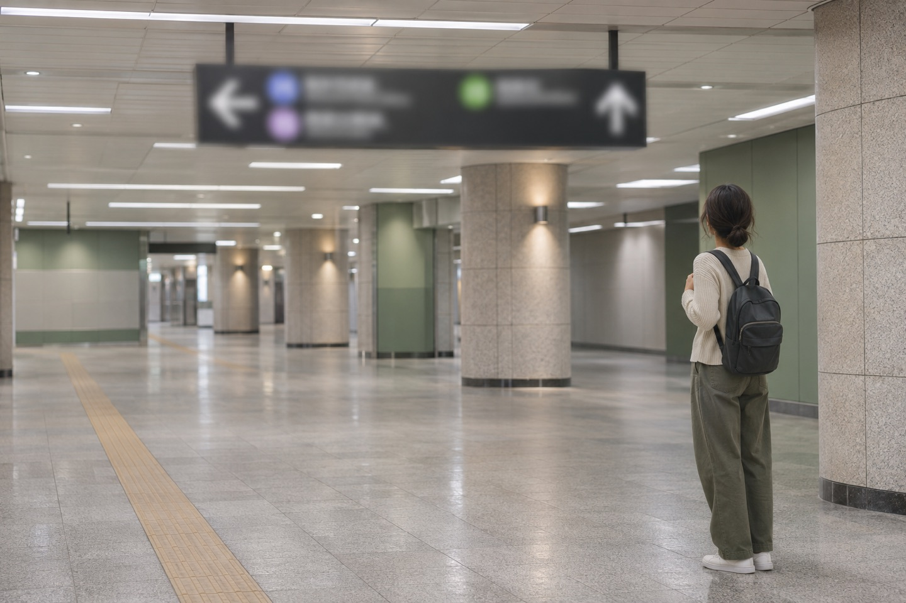

Moving to another city changes the rhythm of a trip. There is a checkout to finish, a station to find and another neighbourhood to learn when you arrive. Rather than filling the day around a single train time, plan the whole move. This is a travel-planning note, not a personal journey report.
Begin with two exact station names.

Korea Tourism Organization’s train overview introduces both high-speed and conventional services. It lists several departure stations in Seoul, including Seoul, Yongsan and Cheongnyangni. Use the actual station shown for your chosen service, rather than treating the city name as a complete departure point.
Write down the departure and arrival stations alongside your accommodation addresses. Then check the journey from your room to the departure station, and from the arrival station to your next stop. A shorter train ride may still involve a longer local transfer; compare the complete journey that suits your plans.
Read the booking details before building the day around them.

VISITKOREA lists station ticket offices, the KORAIL website, the KORAIL+ app and ticketing kiosks among the purchasing channels. Start from the official information below, then check the options offered for your route and date.
Before paying, compare the date, exact stations, departure time, passenger details and the fare conditions shown. Keep the issued ticket and its retrieval instructions accessible. A saved search or a payment notification is not a substitute for checking that your ticket has actually been issued.
At the station, match your ticket to the current departure display and follow staff instructions. If a detail does not match, ask before boarding. Leave a practical buffer for finding your way; this guide does not prescribe a universal arrival time.
Pack for the moments when the bag is in your hands.

Try lifting and moving your packed bag before leaving. Think about doors, station corridors and the walk to your accommodation, not just the train seat. If you need a route without stairs or assistance, check the facilities and assistance arrangements for the actual stations and service.
Keep a layer you may want during the journey near the top. Check the operator’s current luggage rules for unusual or bulky items rather than assuming that a bag which fits one service will be accepted on every other one.
Keep the first hour after arrival simple.
A small bag for the things you need during the journey can save reopening the suitcase. Keep your ticket access, accommodation address and essential personal items easy to find. Put the next destination’s name in Korean and English in your notes if that would make asking for help easier.
Choose one uncomplicated first stop after arrival: your accommodation, a meal, or a place to leave your bags under confirmed arrangements. Avoid building a tight connection to a timed attraction before you have checked the local transfer. There can be room for sightseeing after the practical part of the move is settled.
Official information for the actual journey.
VISITKOREA — Train overview and official booking links ↗
Consult the linked operator for current schedules, fares, seat availability, baggage rules and cancellation conditions. This article does not quote a fare, guarantee a connection or reproduce a timetable.
Source checked November 12, 2026. VISITKOREA identifies its last update as August 7, 2026. The station and purchase-channel overview comes from that source; packing and pacing suggestions are editorial advice. Four existing AI-generated illustrations were visually reviewed and reused for the corresponding planning sections. They do not document an actual station, ticket, journey or current facility conditions.